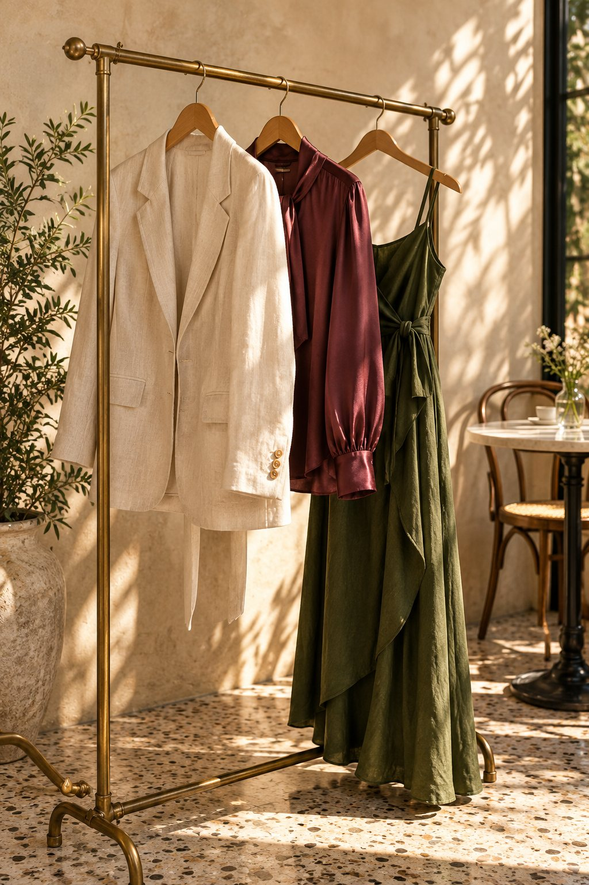
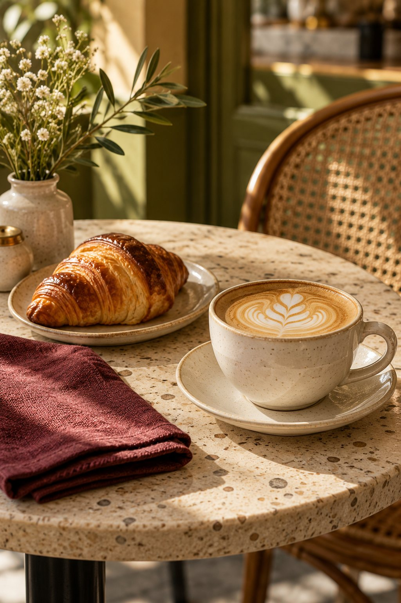

Tu estilo empieza
contigo.
Explora lo que te gusta y la imagen que quieres proyectar, con una mirada a tu estilo personal, proporciones y colores.
MODA, CAFÉ Y CONVERSACIONES
La forma en que vistes también cuenta tu historia. Regálate un espacio para conocerte, compartir y vestir con más confianza.
Quiero descubrir mi estilo9 preguntas · Antes del brunch · A tu ritmo

Encuentra eso que se siente como tú.
detalles que hablanCUÁNDOSábado 31 de octubre, 2026
HORA10:00 a. m.
DÓNDEGrey Café
UNA INVITACIÓN A MIRARTE DIFERENTE
Una mañana entre chicas para hablar de moda, colores, proporciones y compras con intención.
Explora lo que te gusta y la imagen que quieres proyectar, con una mirada a tu estilo personal, proporciones y colores.
Descubre cómo dar sentido a tus prendas y crear combinaciones que acompañen tu día a día.
Aprende a planificar tus compras y a reconocer piezas que realmente quieras usar y combinar.
TU ANFITRIONA
“Una mañana para compartir, aprender y dedicarte tiempo.”
Johanna te acompañará a explorar la moda, la imagen y el estilo para la vida real, en un espacio cercano de café y conversaciones.
Nos vemos en el brunch ♡GUARDA LA FECHA
Cupos limitados. Escríbenos para más información y para confirmar tu espacio.
Reservar por WhatsApp